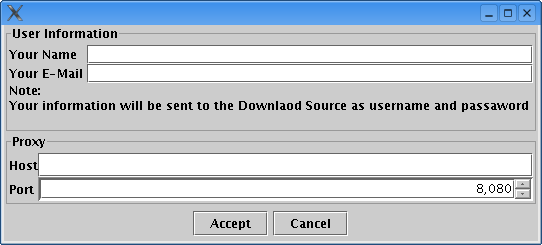
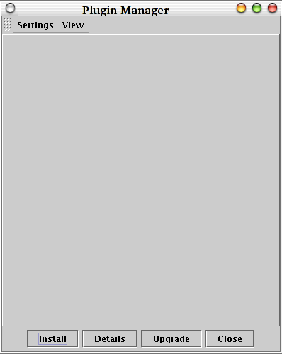
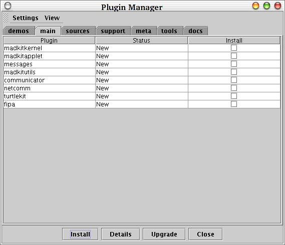

You can also install madkit with the plugin manager. There are two way to install madkit with the plugin manger, from the network, via http, and from your local system. The advantage of installing madkit with the plugin manager is that it keeps track of plugins you installed and their versions. With this information upgrading your madkit installation is just a few clicks away. You can also install only the plugins that you need.
Here is a small step by step description to install madkit
$ unzip plugininstaller-x.y.z.zip
$ cd plugininstaller-x.y.z
Then run the script to launch the installer, either plugininstaller.sh or madkit-install.exe
The installer will show you the GPL license and ask you to select the installation
directory.
Then click "Done".
You will see a window asking for you name and email. IMPORTANT:
This information will be sent to the Download Source as your username (your name) and password (your email).
If you are behind a proxy you can also enter the information here. Please use only the server's name: proxy.yourdomain.com and not http://proxy.yourdomain.com.

Once you accept, will see the plugin manager window. You can always change your information in "Settings" -> "Options" -> "Settings"


The plugins are divided into categories to make them easier to find. Click on the tabs to change the category. You can find a small description about the categories here
To select a plugin just click on the checkbox on the right of each plugin, don't worry about dependencies, the plugin manager will select them for you. Some "Bundle packages" exist so you don't have to click all plugins one by one.
If you want a full install, select madkit-full in the Bundle category.
Note : If you want a default configuration for the madkit Desktop, select desktop2-commons.
Note: This section is only valid if you installed madkit from the network
When you want to check if a new release is available, click on Settings -> Update Plugin List. And then look plugins where the status in shown as "Needs Update".You can also directly click on "Upgrade" and let the plugin manager select the plugins that need an update. Finally click on "install"
Properties used to generate the plugins packages:
project.name name of your plugin.
project.category It places your plugin to the specified category. If it is not defined your plugin will fall into the "unknown" category. This category is used only as a reference to make the plugin easier to find and its only used for the binary package. The source and documentation are in the "sources" and "docs" categories respectively.
depend: probably the most important property, here you define on which plugins your plugin depends on. It is a list of comma separated plugin names.
<property name="depend" value="madkitkernel, pythonlib"/>
zip.extra.inc.bin and zip.extra.inc.prefix if you need to and more than one jar file to your binary package, you can define these to properties. The first one is the jar file to include and zip.extra.inc.prefix is the prefix to use in the zip file. For example:
<target name="web-dist" depends="jar">
<property name="zip.extra.inc.bin" value="boot.jar"/>
<property name="zip.extra.inc.bin.prefix" value="lib"/>
<ant antfile="${generic.file}" dir="." target="web-dist" inheritrefs="true"/>
</target>
The plugin manager lets you also specify certain action to configure your plugin after the installation process.
To define the actions to use on a particular type of package (bin, src or doc) you must define a property on the web-dist target of the plugin's ant build file. The properties are:
For the moment only one action is available, docref.
The DocRef action lets you add references to html documents. These references will be mainly used by the DocBrowers plugin.
The DocBrowser divides the references into sections, the main ones are:
The attributes of this action are:
Important: You don't need to add a docref action for the plugin API, this is automatically done by the ant generic file.
Here is an example taken from the communicator's build file.<property name="madkit.plugin.actions.doc"
value='<action id="docref" url="plugins/communicator/docs/communicator.html" name="Communicator Manual" section="manual"/>'/>
While the plugins are checked with a md5sum, the plugins.zip file is not. So the plugin manager will try to open the downloaded file as a zip. However, the server might not allways send the zip. To verify if the plugins.zip is really being downloaded, try wget http://download.url/download.php?file=plugins.zip and check if the downloaded file is really a zip file. Normally you will find instead a html page, just look for the real url and use it as you Server Download url.